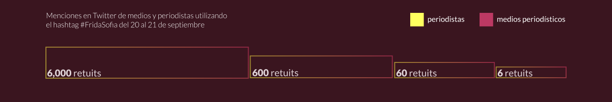
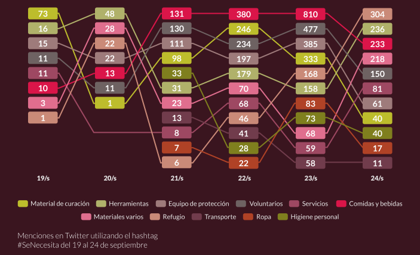

19S, el revuelo social
Lunes 11 de diciembre de 2017
Del terror a la indignación, del letargo a la acción, de la rabia a la esperanza. Así vivimos el pasado terremoto 19/s en la Ciudad de México. El vertiginoso flujo de información en las redes sociales y medios de comunicación durante los primeros días de la emergencia nos sumergieron en una espiral de emociones llevándonos de un extremo a otro.
Creímos que las coincidencias entre los desastres provocados por los terremotos 19/s de 1985 y 2017 eran alucinantes. Sin embargo, conforme se fueron serenado las cosas nos percatamos de las enormes diferencias entre un suceso y otro
De lo virtual a lo terrenal
A todas luces lo diametralmente opuesto entre los 19/s fue la comunicación. En medio del desastre que se desencadenó en la ciudad, es inevitable destacar la forma espontánea en que interactuó la sociedad a través de las redes sociales.
Los ciudadanos se apoderaron de las plataformas digitales, en particular Twitter, Whatsapp y Facebook, fluyó ininterrumpidamente. Opuesto a lo acontecido en los ochentas, donde las comunicaciones eran análogas y la difusión de información fue una gran limitante.
La tumultuaria interactividad que se dio en las redes, también trajo sus contratiempos. La falta de organización en el contexto de la emergencia ocasionó que la atención de víctimas y la ayuda a los damnificados se volviera confusa y caótica, dando entrada al amarillismo, la desesperación y las fake news.
Para fortuna nuestra, también presenciamos un fenómeno nunca antes visto en esas dimensiones. Esas redes traspasaron la virtualidad y se transformaron en cadenas humanas que no dejaron de brindar ayuda en los momentos más álgidos de la emergencia.
Las verdaderas redes sociales se formaron en la calle, entre las personas, una a una, trabajando cuerpo a cuerpo.
Esta ocasión, La Data recopiló un conjunto de bases de datos para analizar el contenido y los canales de esta caótica comunicación que causó revuelo social. Desde la conmovedora reacción solidaria en apoyo a los damnificados, las muestras de generosidad ciudadana, hasta la indignación nacional que provocó la cobertura mediática de un insólito rescate fantasma.
Algunas de las bases de datos que utilizamos fueron producto del esfuerzo de cientos de voluntarios que se encargaron de concentrar y verificar la veracidad de la información, otras a partir de minar y analizar más de medio millón de tuits.
A las 13:14 horas del 19 de septiembre comenzó el sismo. Durante los primeros minutos las redes sociales se convirtieron en herramienta y boomerang de información.
El desfogue social de la ciudadanía fue un remolino de emociones proyectados en redes. Los primeros tuits que pudimos conseguir fueron escritos a las 13:56 horas del 19/s, el hashtag #SismoCDMX fue el primero en ser trending topic.
Menciones en Twitter utilizando
el hashtag #SismoCDMX

En el sismo Twitter se convirtió en la herramienta idónea para mantenerse informados.
Para las 20:00 h la solidaridad ya estaba echada a andar y parecía ser el sentimiento que predominaría en la red. En los primeros días del sismo la ayuda se desbordó. En los centros de acopio se reportaban exceso de víveres. Cinco días después del temblor la noticia ya acaparaba todos los espacios de comunicación, el sismo del 23/s volvió a disparar la preocupación y la solidaridad, el tema se volvía cada vez más viral. A diferencia de otros momentos en que los memes y las bromas han sido parte de la catarsis social, en esta crisis, la burla fue un sentimiento que se mantuvo casi inexistente.

Ética vs Rating
La muerte y los rescates en un terremoto, cuentan las crónicas más conmovedoras.
Mezclar información de una desgracia con un poco de drama televisivo es una fórmula insuperable. Conmover a la audiencia y mantenerla cautiva por horas o días se hace un negocio extremadamente rentable en términos de ingresos por publicidad. Pero, ¿están dispuestos los medios de comunicación a crear historias falsas y poner en entredicho la ética periodística?
Entre los decesos de mayor impacto del pasado 19/s, sin duda, fueron los ocurridos en el Colegio Enrique Rébsamen donde 26 personas murieron bajo los escombros, 19 de ellas eran niños.
Las crónicas en diversos medios coinciden en que personal de la Marina cercó el lugar, convirtiéndolo en un búnker con un estricto control de la entrada y salida de personas.
El derrumbe en una escuela de educación básica al sur de la ciudad era el escenario del drama de una pequeña niña atrapada esperando a ser rescatada que tuvo en vilo a millones de personas en México y el mundo.
Salvar con vida a una pequeña era prioridad de autoridades y voluntarios. Los principales noticieros transmitieron horas de incertidumbre -muy inusuales- dentro de la tragedia generalizada, quebrando las rutinas institucionales y periodísticas.
Vimos a los profesionales de los medios de comunicación trabajar bajo fuerte presión, incertidumbre y vulnerabilidad. Por la magnitud de la tragedia, la historia tuvo una alta significación social, sacar de entre los escombros a la pequeña "Frida Sofía", nos tocó el corazón y horas más tardes, se calló al telón. ¿Quiénes fueron los actores que ayudaron a difundir esta historia?
A las 22 horas del 20 de septiembre, cuando aún no se sabía de la pifia, los medios que mayor repercusión tuvieron en difundir la información sobre el caso, utilizando la etiqueta o hashtag #FridaSofía fueron: El Financiero y TV Notas, de acuerdo al scrapping que realizamos el día 30 de septiembre de 2017.
Las primeras horas del 21 de septiembre, cuando ya empezaban a generarse dudas de la existencia de la niña fueron Chiapas en la Mira y Noticias MVS quienes iniciaron la discusión; pero fue la cuenta del reportero "@diagomatias" la que mayor repercusión tuvo defendiendo la cobertura de Televisa.
En la tarde de ese día, cuando fue confirmada la falsedad de la historia, el universo de medios y reporteros sobre el tema explotó como puede verse al final de la gráfica. Fue la cuenta de "@AristeguiOnline" la que mayor retuits tuvo.
Difusión de una noticia falsa: Frida Sofía

La acusación de un deliberado montaje de la principal cadena de televisión abierta a nivel nacional, que se disculpó con la audiencia ocasionó una indignación generalizada y una ola de descalificaciones al medio, conductores y reportera; de quienes no tenemos la certeza de si eliminaron sus tuits.
Solidaridad ciudadana
La gran actividad en Twitter muestra solo un reflejo de los esfuerzos de la ciudadanía por generar redes de solidaridad emergentes.
En medio de la crisis, las redes sociales tuvieron una función vital que se vio transformada en acciones reales. Las prioridades más elementales en los primeros momentos de la emergencia fueron comunicadas por Twitter, al principio (21/s) lo que se mas se necesitó fue "material de curación". Para el día Viernes (22/s) las "herramientas" ya eran la prioridad, pues se requería cortar, romper y levantar cantidad innumerable de escombros para sacar con vida a las personas atrapadas. El Jueves (21/s) muchos voluntarios ya estaban exhaustos; se necesitaban nuevas manos y por ende, "comida" y "equipo de protección", efecto que se repitió los dos días posteriores. Ya para el 24/s, "refugio" era lo que más se pedía en Twitter.
Apoyo económico a México después del 19/s

Otro tema eran los lugares donde se solicitaba la ayuda. Y es que la confusión que se vivió en el momento ocasionó que algunos centros de acopio se vieran saturados y obligados a reubicar los víveres, que en algunos casos se echara a perder la comida, o que se congestionaran las vías de comunicación por el exceso de apoyo, impidiendo el paso de vehículos de emergencia.
El caos de desorganización se topó contra pared con la iniciativa ciudadana #Verificado19S, que concentró un grupo de activistas, periodistas y programadores para buscar formas de verificar la información que aparecía en medios de comunicación y redes sociales.
A partir de las bases de datos de #Verificado19s y de fuerzamorelos.org, analizamos cómo fueron cambiando, día a día, los lugares en donde se requería más ayuda.
El grupo de las Colonia Condensa, Roma y Del Valle fueron las que mayor menciones tuvieron de la etiqueta #SeNecesita, aunque es necesario matizar que en varios centros de acopio se utilizaron como puntos de concentración para llevar ayuda a otros sitios como Xochimilco o Morelos.
Un caso particular fue el de la Colonia del Mar, ubicada en la delegación Tláhuac. El mayor número de menciones que tuvo fue el 28 de septiembre, en comparación con el resto de las colonias señaladas cuyas menciones descendían casi en su totalidad. Esta colonia al sur de la capital estuvo más de una semana sin agua, el diario El Universal reportó el “secuestro” por parte de grupos armados de las pipas encargadas de abastecer a los vecinos
Poner grafficas aquí
El sismo 19/s pasado nos dejó lecciones importantes como ciudadanía. Como usuarios de redes nos mostró, tanto en la vida real y virtual, las capacidades que tenemos de convocar la solidaridad y empatía.
El revuelo social nos sigue detonando esperanza, enojo, rabia e indignación. Vimos al paso de los días que esas oleadas de apoyo debemos conservarlas y extenderlas por periodos más amplios. La adrenalina de los primeros días debe perdurar hasta que cada víctima sea tratada con dignidad y cada damnificado sea apoyado a recuperar su estabilidad.
Los sismos, no nos cansaremos de repetir, seguirán cimbrándonos todos los días. Cada vez debemos incorporar a nuestra vida cotidiana una cultura de protección civil que nos permita actuar con cordura en momentos de emergencia, aprender a compartir y difundir información con responsabilidad y ayudar a nuestros semejantes en medio del desastre.
El desastre nos enseñó a distintas generaciones a convivir y compartir en la tragedia, pero debemos tomar acciones preventivas entorno a la creación de protocolos, en especial los de comunicación, que estén a la altura de la emergencia.
Todo lo que nos pasó, da cuenta de que una vez más, medios y autoridades, quedaron rebasados por la ciudadanía.